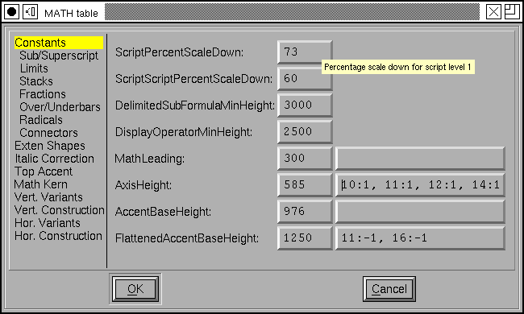
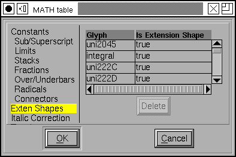
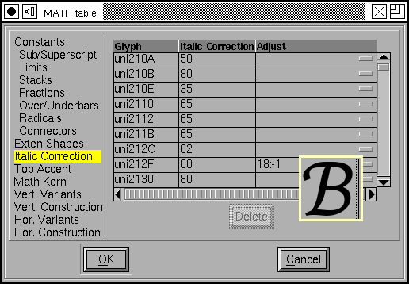
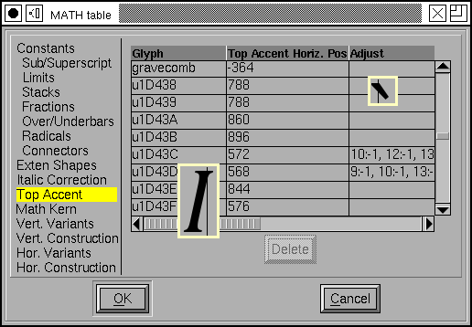
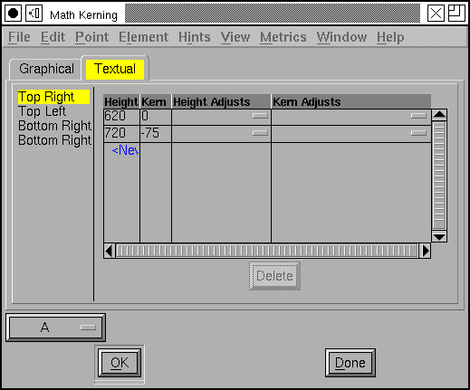
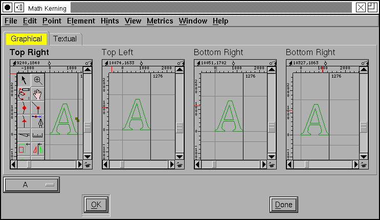
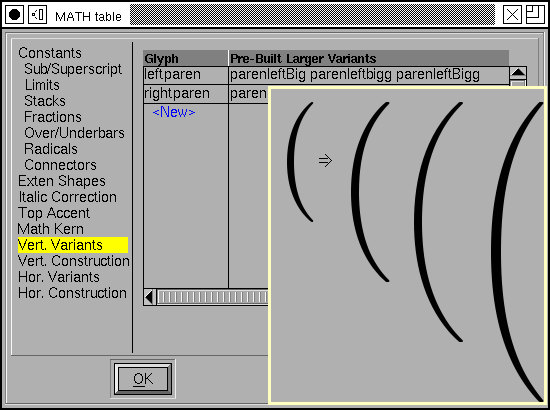
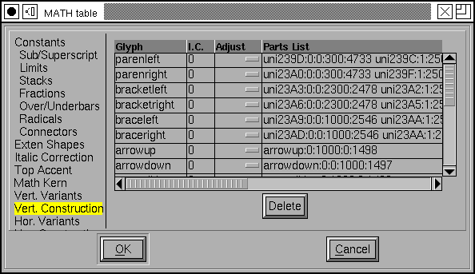

Math typesetting information
In summer of 2007 (as I write) MicroSoft is proposing an extension to OpenType
which will allow fonts to contain information useful for mathematical
typesetting. The information all lives in a new 'MATH' table.
FontForge now allows you to perform basic editing on this table.
Constants
The
table is divided into several parts. One part provides information on font-wide
constants (And I do not mean "pi" or 2.71828... when I say constant here).
These have to do with the size of various elements of mathematical formulae
with respect to one another, and the spacing between them. So
FractionNumeratorGapMin specifies the minimum gap (white space)
between the bottom of the numerator of a fraction and the fraction bar (the
rule between the numerator and denominator.
I will not describe all of these constants here, there are about 60 of them (and they take up 8 panes in the dialog). Most are fairly self-explanatory, but some I do not understand myself. FontForge has little popup messages plagerized from the specification which try to go into more detail.
Some of these constants are stored as percentages of some other size (ScriptPercentScaleDown is and means that sub-elements should be drawn at a pointsize 73% of the current one -- I think). But most constants are represented in em-units, and most of these may also have device table adjustments specified. (At small pixel sizes (such as those used for screen fonts) the rounding error introduced by converting from em-units to pixels may be as large as the movement itself. A device table allows you to specify that (in the case of AxisHeight above) when the font is rasterized to be 10 pixels high the Axis should be moved up by one pixel).
FontForge is not always configured to support device tables, so if these columns are missing you just need to reconfigure and rebuild it.
Glyph specific information
In addition to the constants there are various bits of data that potentially pertain to each glyph.
Extended Shapes
The simplest of these per-glyph data is a flag which indicates whether a glyph is an extended shape. Extended shapes tend to be taller than normal characters and need to have superscripts raised higher than normal shapes.
This sub-table consists of a list of glyph names and an indication of whether
this glyph is an extended shape (you may add additional glyphs at the bottom
of the list, order is irrelevant here).
Italic Correction
The concept of "Italic correction" will be familiar to users of TeX. Basically when an upright glyph is placed after an italic (or oblique) glyph the slanted glyph may overlap the upright one slightly (since it is designed to fit next to another slanted glyph). The italic correction is a small addition to the glyph's advance width applied when followed by an upright glyph (and in some other cases too).
If you allow the mouse cursor to hover over an entry a small window will pop up showing the glyph, the normal advance width (as a dotted line), and the corrected advance width.
Here again you are allowed to specify a device table to adjust the
correction.
Top Accent Attachment
When positioning an accent above a glyph Mathmatical typesetting follows complex rules to determine how high about the glyph it should go. The standard Mark To Base GPOS lookup is inappropriate here.
Instead all that needs to be specified is the horizontal position at which the glyph and accent should attach.
This table can be used to specify that position in both the base glyph and the accent. In the example at right I show one of each. The vertical line indicates the attachment position in each, and the glyphs will be adjusted so the two lines match up.
Again a device table may be specified to control positioning at small pixel
sizes.
Math Kerning
 This
subtable is used when positioning subscripts and superscripts at various
corners of a glyph. A glyph may have a superscript attached to either its
top left or top right edge (limits for integral signs use the same mechanism,
and probably other concepts will as well), and a subscript at the bottom
left or right.
This
subtable is used when positioning subscripts and superscripts at various
corners of a glyph. A glyph may have a superscript attached to either its
top left or top right edge (limits for integral signs use the same mechanism,
and probably other concepts will as well), and a subscript at the bottom
left or right.
In a slanted glyph it is clear that the horizontal positioning of a subscript should be different from the horizontal positioning of a superscript -- A problem similar to the italic correction. But this is more complex as the positioning point may depend on the size of the sub/superscript and exactly where it attaches vertically.
This subtable allows you to specify a list of glyph kerning/height pairs
for each corner of the glyph. Click on the word "Change" above to get a new
dialog. These data may be specified textually:

At any given height a kerning value may be specified. This value is relative
to the default position of the subscript (and I'm not entirely sure what
that is). As always device table adjustments may be specified.
FontForge also allows you to specify these data graphically

FontForge displays bottom right attachments relative to the advance width
line of the glyph
FontForge displays top right attachments relative to the advance width plus
the italic correction.
FontForge displays bottom left attachments relative to the origin of the
glyph.
FontForge displays top left attachments relative to the italic correction.
Note: If you are familiar with the MATH table spec you will recall that the last kern value does not have a height attached to it. FontForge tries to guess a reasonable value for the unspecified height (because it makes editing easier if I let the user move a point around), but have no fears, that guessed at value will never show up in the MATH table itself.
Vertical and Horizontal Glyph Variants
Some glyphs, like parentheses and brackets need to be drawn in many sizes depending on the size of the formula they are enclosing. One possibility is just to draw them at a larger pointsize, but that is non-optimal because then the glyph will be symetrically scaled and so much bolder than it should be. Another solution is to design several variants of these glyphs at steadily increasing sizes. A third solution (which we will come to in the next section) is to design the glyph in sections so that it can be composed at any size.
In this sub-table you may specify a normal sized glyph (here "leftparen") and then a list of variants in increasing sizes.
Glyphs may be grow along either the vertical axis (as here) or the horizontal
axis.
Vertical and Horizontal Glyph Construction
As I said above, it is also possible to build a glyph out of bits of other glyphs.
Each such constructed glyph has (potentially) and Italic Correction (and device table adjustment). This value should be independent of the size of the glyph.
The components are rather difficult to specify in this display, but if you
scroll the dialog to the far right you will find a little rectanglular box,
and clicking on this will produce the dialog below.

Every
 component
is either an "Extender" component -- which means it may be stuck in the composed
glyph as often as needed (or not at all) to make the glyph be as big as needed.
component
is either an "Extender" component -- which means it may be stuck in the composed
glyph as often as needed (or not at all) to make the glyph be as big as needed.
Component glyphs may overlap one another. You may specify a maximum overlap for each end of each component. You may also specify how much the component adds to the total height (or width) of the composed glyph.
Finally there is a font-wide constant (in the Connectors pane of the Constants
section) called MinConnectorOverlap which specifies that glyphs must overlap
by at least this amount.
The per-glyph information may also be specified from the
Glyph Information dialog.
I wish to thank Sergey Malkin at MicroSoft who provided me with a copy of the spec, and Apostolos Syropoulos who provided me with a test font containing a 'MATH' table.